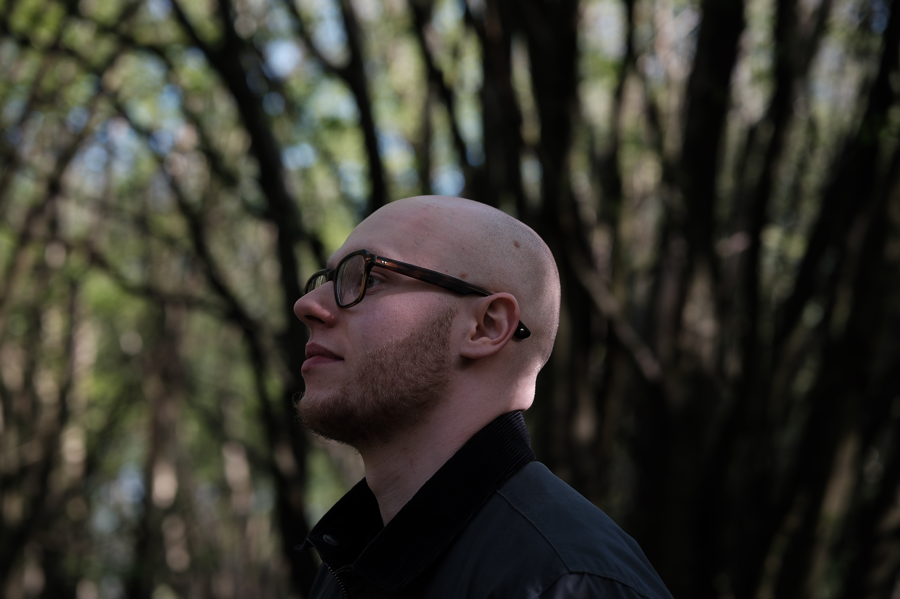

Working on detecting deepfakes taught me the value of real photography and the beauty inherent in capturing the stunning imperfections of reality.
My professional life in Product, working primarily within deepfake detection for facial imagery with a particular tilt towards Agentic AI applications, led me into discovering a passion for posed portrait photography. A well captured portrait is the idealistic attempt at distilling a person’s fullness into a single frame; which even when unattained contains qualities which can never be replicated by the fraudulent generations of artificial intelligence.
Within portraiture I focus on working with individuals to curate a scene which captures the productive essences of life which they orient themselves towards: family, work, passions, homes, lovers, moments.
I return to subjects only a few frames from the hundreds captured in a single shoot.